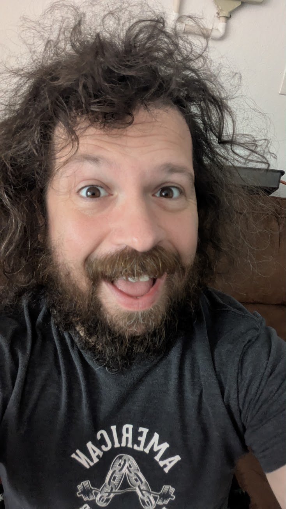

One Hour of Talking.
8 Polished Hero Videos.
Turn a single hour of raw, unscripted talking into 8 polished, ready-to-post hero videos (a full month of content)—without buying a $5,000 camera, losing your week to editing software, or locking into a retainer on day one.
Watch the breakdown (7 min) — or keep reading...
Build Your Free Hero Video Guide →A nice short video is the closest thing we have to shaking someone’s hand through a screen.
Let’s be honest about why social media marketing works right now: that’s just where people’s attention happens to be.
Online isn’t inherently better than in-person just because it’s cheaper—and it won’t stay this way forever. Eventually, the pendulum will swing back to the material world: real rooms, real products in people’s hands, looking someone in the eye and shaking their hand.
Until that shift happens, video is the closest bridge we have.
Viewers retain up to 95% of a message when they watch it in a video, compared to 10% when reading text.
Static posts get scrolled past. Email blasts sit unopened. The people capturing your audience’s attention right now aren’t necessarily better at what they do than you are—they’re just the ones showing up on camera with consistent, grounded “hero videos” that feel real.
If you’re great at your actual craft—running a shop, leading a team, building a real business—and you’ve got that “I know I should be posting” monkey on your back, the problem isn’t you. You just don’t have eight hours a week to become a filmmaker. And you shouldn’t have to.
images/portrait.jpg

Straight up: I am not a videographer, a VFX artist, or a keynote speaker.
I started out as a musician and a web designer. Over the years, I’ve built sites, written copy, and run through the whole marketing circus. Out of everything I’ve done, the single skill that has consistently made the most money—for me and the people I work with—is social storytelling.
I am an editor—and a systems guy.
My job isn’t to show up to your office with a boom mic and disrupt your workday. My job is to take one hour of you talking—just answering real questions for your audience—and turn it into 8 polished hero videos:
-
Curate the gold: Pull out your sharpest answers and cut out the rambling, pauses, and stumbles.
-
Build the rhythm: Tighten the pacing, add clean captions, and polish the audio so people actually stay to the end.
-
Add visual weight: Layer in relevant B-roll and hand you back 8 ready-to-post hero videos (2 posts a week for a full month).
Put the right people at the table.
You wouldn’t ask your accountant to fix your plumbing. You wouldn’t put your doctor in charge of ordering freight. So why are you trying to be your own video editor on top of running your business?
And why should you have to sign a scary monthly retainer before you’ve even seen what one month of consistent video feels like? Here is what the math actually looks like:
| Option | The Real Cost | Your Time Commitment | The Outcome |
|---|---|---|---|
| Doing It Yourself | $1,000+ per video in lost billable time (8–10 hrs at $100–$150/hr) | 8–10 hours/week fighting software, hunting B-roll, and second-guessing cuts | Burnout and quitting by week three |
| Full Production Agency | $5,000 – $10,000 / month | Scheduling shoots, clearing your office, managing a crew | High overhead and long-term lock-in |
| The One-Hour Hero Sprint | One fixed sprint — a fraction of agency rates, zero lock-in | 1 hour total talking about what you already know | 8 polished hero videos (2/week for a month). Keep me on retainer after—only if you want to. |
Already makes sense? You don’t need to read the rest of this page.
Build Your Free Hero Video Guide →How we use AI without turning your brand into “AI slop.”
Just like online isn’t automatically better than in-person because it’s cheaper, AI isn’t automatically good just because it’s free.
Your feed is already drowning in fake avatars, robotic voiceovers, and soulless scripts. People can smell it in two seconds, and they scroll right past it.
Here is my 100% transparent line in the sand:
What AI Handles
- Ideation & BrainstormingOrganizing your rough, scattered thoughts
- Q&A Shoot GuidesTurning your audience’s real questions into natural prompts via my Pocket Video Director below
- Zero Blank-Page DreadGiving you a clear starting line so you never stare at the lens wondering what to say
What Stays 100% Human
- Your Face & VoiceReal delivery, real tone, zero synthetic avatars
- Your Real SettingYour actual workspace, not a sterile green screen
- The Edit & PacingA human editor who knows when to hold a pause, when to cut, and how to keep that gritty realism
Using AI to structure your ideas isn’t cheating—it’s the smartest, most practical way to get out of your own head. You answer the questions in your own words, inject your own industry intuition, and let a human editor shape the final cut.
One hour from you. 8 finished hero videos from me.
Start with one fixed Sprint—2 hero videos a week for an entire month (8 finished cuts). No long-term contract. If you love having the monkey off your back, we can talk about keeping me in your corner afterward.
Prep without the blank-page dread: We map out 8 real questions your audience asks every day so you never have to wonder what to talk about.
Record for one hour: Sit down in your real workspace, hit record on your phone or webcam, and talk through your answers—or, if you hate talking to an empty room, we can hop on a 1-hour guided interview call and I’ll pull the answers out of you live.
Receive your 8 hero videos: Upload the raw files untouched. I pull out the strongest segments, cut the stumbles, clean the audio, add captions and B-roll, and hand back 8 ready-to-post hero videos.
Want to test the workflow right now?
Below is my free Pocket Video Director. Answer six quick questions and it will build a custom, plain-English Q&A filming guide for your first hero video—no scripts, no jargon, and nothing to buy.
If you want the full step-by-step setup and recording checklist too, you can also grab The One-Hour Hero guide anytime.
Try it free: build your first hero video guide in 60 seconds.
Answer six quick questions below. You’ll get a custom, plain-English Q&A filming guide tailored to your audience—plus the option to book a quick call if you want me to handle the editing.
No high-pressure sales pitch—just a straightforward conversation about your One-Hour Hero Sprint and whether we’re a good fit.
See an example guide first (annotated: “Why Bananas Are Amazing” for monkeys)
Here’s what the tool actually spits out—no robotic scripts, just simple prompts you answer out loud.
A quick word first
George, hating how you sound on camera is completely normal—literally nobody likes the sound of their own voice played back. The monkeys watching you aren't grading your posture; they just want to know if bananas are actually worth climbing down the tree for.
↑ Directly calms the exact blocker you picked in Step 1.Your 2-minute setup
- TipWipe your phone lens on your shirt and prop it against a coconut at eye level so it doesn't wobble.
- TipHold the phone upright and jump straight into your first line—your audience scrolls fast.
Your hero video, step by step
Start like this
- AskIf a skeptical monkey asked you why you're so obsessed with bananas, what's the first thing you'd say?
- Open“I used to eat plain leaves all day—until one yellow fruit completely changed my mornings.”
Your three talking points
- AskWhat's the biggest thing that makes a ripe banana better than anything else in the jungle?
- SayBuilt-in wrapper, zero prep, instant energy for swinging.
- AskCan you share a quick personal story about a day a banana genuinely saved you?
- SayThat rainy Tuesday when I was exhausted and one bunch kept me going.
- AskWhat's the one mistake other monkeys make when picking a bunch?
- SayGrabbing them too green—wait for two tiny brown freckles.
Finish like this
- AskWhat's one easy next step for a monkey who wants to try one today?
- Close“Drop a comment if you're team slightly-green or team spotted—I want to hear it.”
Your quick B-roll shot list
A-roll is the talking; B-roll is the showing. Hold each shot steady for 5 full seconds with no talking:
- ShotA close-up of you peeling a fresh banana in the morning light.
- ShotHolding up a ripe bunch showing those two tiny brown freckles.
- ShotTaking a big, satisfied bite while looking out over the treetops.
If you stumble, keep going
If you trip over a word, just pause for two seconds, take a breath, and say the sentence again. An editor will snip out every stumble and “um,” so you literally cannot ruin this by messing up.
Your Pocket Video Director is writing your guide…
This usually takes 10 to 20 seconds.
Ready to turn one hour into 8 hero videos?
Give me one hour of talking—either self-filmed or on a guided interview call—and I'll cut out the “ums,” add captions and B-roll, polish the audio, and hand back a full month of ready-to-post hero videos.
Book a Quick Call →No high-pressure sales pitch. Just a straightforward conversation about your One-Hour Hero Sprint.
Before you hit record, make it yours.
- Read the question at the top of each section, then answer it like someone from your audience is sitting across from you.
- Cross out any bullet that doesn't sound like you—the key lines are just a safety net.
- Add a real story or example of your own wherever you can.
- Keep it short enough to fit on one screen so you only glance at it between takes.
The voice, the delivery, and the face are all yours. That's the part nobody can fake.